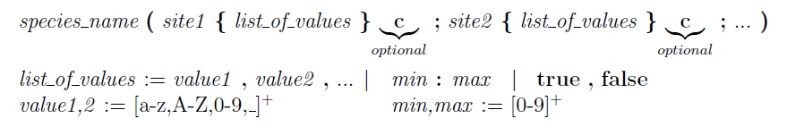
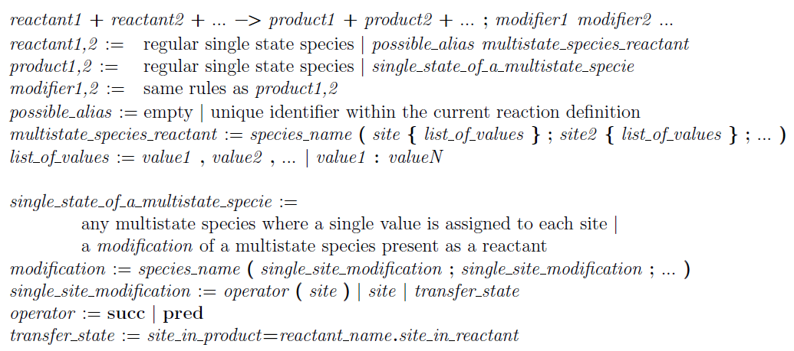
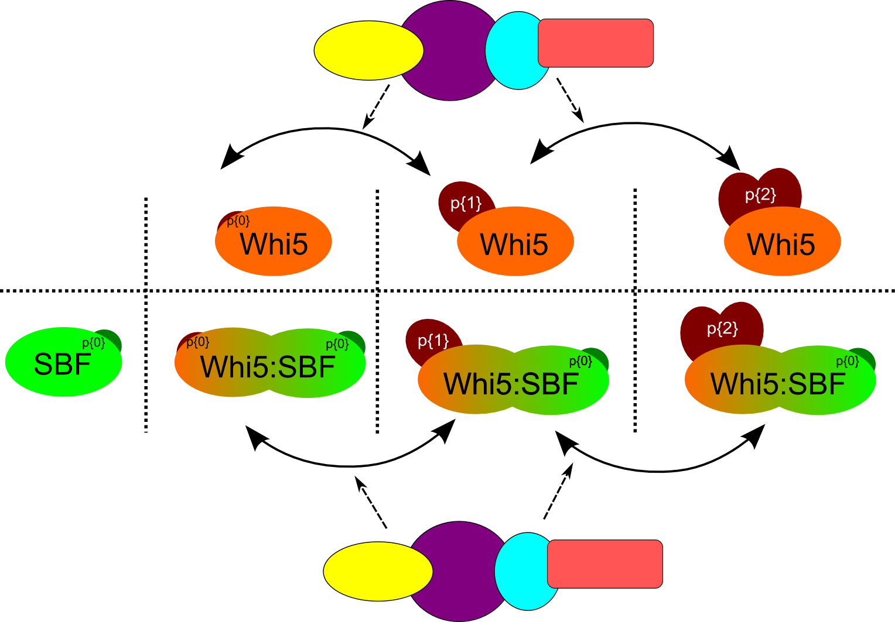
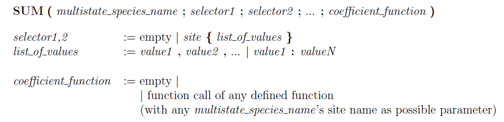

Our multistate syntax has many elements and, even if it is quite intuitive, it may take some time to become familiar with that.
For this reason in the table below we provide high-level intuitive examples of all the elements of the grammar, while in the following sections we provide detailed and more formal explanation of the different elements of the language.
Note: if inconsistencies are found in the usage of those elements, MSMB will notify the user of the error and the model will not be valid.
If everything is correct, the user can see the result of the expansion of the compacted forms of reactions using the appropriate button in the interface.
| Cdh1(p{0:10}) |
species (called Cdh1), with a single site (called p),
which has the following 11 ordered numerical states
0,1,2,3,4,5,6,7,8,9,10 |
| SBF(p{0:5};status{st1,st2,st3}c) |
species (called SBF), with two sites (called p and status).
Site p has 6 ordered numerical states (0,1,2,3,4,5).
Site status has three string states (st1, st2 st3) and it is
circular, meaning that the successor of the last element (st3)
is the first element of the list (st1) and the predecessor of the first
element of the list (st1) is the last element of the list (st3).
|
| Cdh1(p{lower:upper}) |
species (called Cdh1), with a single site (called p), which has
a set of ordered numerical states determined by the numerical
(integer) value of two Global Quantities (called lower and upper)
defined elsewhere in the model. |
| Cdh1(p{0}) |
represents a specific state of the species Cdh1
(specifically the one where the site p has value 0).
It can be used in Reactions or Expressions. |
| Cdh1(succ(p)) and Cdh1(pred(p)) |
Restriction: can be used only as a Product in a Reaction,
and it represents the state value after (succ) or before (pred)
of Cdh1’s site p in the Reactants of the same Reaction. |
| Cdh1(p=Species2.siteName) |
Restriction: can be used only as a Product in a Reaction,
and it represents the transfer of the state of Species2’s
siteName’s value to site p of species Cdh1. Species2 should
appear between the Reactants of the same Reaction. |
| SUM(Cdh1) |
Restriction: can be used only in Expressions and it represents
the summation of species Cdh1’s amount in all its possible forms |
| SUM(Cdh1;p{1:10}) |
Restriction: can be used only in Expressions and it represents
the summation of species Cdh1’s amount in all the forms where
site p has a numerical value in the range between 1 and 10 |
| SUM(Cdh1;p{2:5};weightFun(p,k1)) |
Restriction: can be used only in Expressions and it represents
the summation of species Cdh1’s amount in all the forms where
site p has a numerical value in the range between 2 and 5, and each
term of the summation is weighted using a function called weightFun
(defined in the Functions table) that takes two parameters:
the current value of site p and a Global Quantity, called k1.
Note that this is just an example of weight function, there are no
restrictions on the definition of this function. |
Multistate Species
A multistate species is characterized by a name and a set of one or more distinct sites. Each site has an ordered list of possible values (or states) that it can assume. Different types of states are supported by our syntax: in particular the user can decide to use boolean values (true/false), literal strings or integer numbers. Each type behaves in a in the same way w.r.t. supported operators like successor "succ", predecessor "pred" and range ":". However the behavior of the operators depends on the interpretation of the sequence of states itself: it can be defined as a simple sequence (the default interpretation) or as a circular sequence. This second interpretation connects the last element of the sequence to the first. This implies that while the successor of the last element of a basic sequence will raise a
Major issue error, the successor of the last element of a circular sequence will simply refer to the first element of the same sequence (see tables below for some examples). As a final note, it is important to remember that when the expansion of a multistate species is requested, all the states of the different sites of a species are combined to create all the possible single state species configurations.

Syntax of the multistate species. Bold characters are keywords, spaces between symbols have been added just for readability and are not allowed in the species definition because they create ambiguous situation for the reaction grammar. Intuitively, any species can have a set of sites (separated by ;) and each site can have an ordered list of values (separated by ,) or a range. If the range constructor (:) is used, the two state values should be integer and represent the min and max value for that site. If the sequence of states is explicitly defined, the single values can be any literal string (with possible usage of the _ symbol). If the sequence of states is followed by the
c letter, it means that the list will be interpreted as "circular", if the letter does not appear, the sequence of states is non-circular.
For example see the following multistate definitions (on the left) and relative expanded form (on the right):
| Multistate format |
Expanded format |
| Cdh1(p{0:10}) |
Cdh1(p{0}) Cdh1(p{1}) Cdh1(p{2}) Cdh1(p{3}) Cdh1(p{4}) Cdh1(p{5}) Cdh1(p{6}) Cdh1(p{7}) Cdh1(p{8}) Cdh1(p{9}) Cdh1(p{10}) |
| Whi5(p{0:6}; b{bound,free}) |
Whi5(p{0};b{bound}) Whi5(p{1};b{bound}) Whi5(p{2};b{bound})Whi5(p{3};b{bound}) Whi5(p{4};b{bound}) Whi5(p{5};b{bound})Whi5(p{6};b{bound}) Whi5(p{0};b{free}) Whi5(p{1};b{free})Whi5(p{2};b{free}) Whi5(p{3};b{free}) Whi5(p{4};b{free})Whi5(p{5};b{free}) Whi5(p{6};b{free}) |
Multistate Reactions
Multistate reactions are similar to classical chemical reactions with the only difference that they involve multistate species as reactants and/or products.
Their goal is to express in a compact way an appropriate set of classical single state reactions. This compact structure reduces the cognitive load on the modelers to a meaningful extent for large models.
The syntax of a multistate reaction should be compliant with the following rules
(!!Note!! that the rules looks very complicated because they are trying to include all possible cases.
The examples presented in the rest of the section are probably easier to read to grasp the multistate reaction syntax):

Syntax of the multistate reactions. Bold characters are keywords, spaces between symbols have been added just for readability. Intuitively, any reaction collectively describes the set of dierent multistate states that a reactant can have. Note that the syntax of the multistate reactant is very similar to the syntax of a multistate species definition. Operators works at the level of the single state value from the reactant to the product. So the separators (, and : ) are used with a different meaning here: they do not enforce an order but they simply allow the user to refer to a group of states. The expansion of the reaction will depend on the existing definition of the multistate species (and if inconsistencies are found, a
Major issue will be generated by the tool). Those separator has been chosen to keep a coherent syntax for multistate species even if used in different contexts. To understand some peculiar components of the reaction grammar (as possible alias, operator, transfer_state) we refer the user to the examples below.
Intuitively, we want to collectively describe reactions that start from different states of a multistate species and generate as products, multistate species with states logically connected to the reactant states. See the tables below for examples of multistate reactions and their expanded form.
The successor/predecessor (
succ(.) and
pred(.)) operators can be used on any site type (numerical, literals, booleans) and they return the following/preceding state of a specific site. If the successor (predecessor) is called on the last (first) element of the available sequence of states and if the states values are not circular in the species definition, an error is going to be generated and the proper debug message (with major issue severity level) will be added in the list of debug messages of the model. If instead the operator is called on a site that has been defined as circular, no error is generated and the first (last) element of the set is going to be returned as a valid value. The general usage of those operators can be seen the tables below, but scenarios in which the cyclic definition of numerical sequences is meaningful or non-cyclic definition of boolean/literal states are also plausible.
WARNING! If the modeler uses the "Multistate Builder" window to create boolean sites (see Section
Species definition), the generated sequence is going to be circular (because this is the general interpretation of true/false sequences: the successor of true is false and the successor of false is true - and the same holds for the predecessor). However if the modeler types directly the sites states in the Name column of the Species table, it is his/her responsibility to add the c qualifier after the sequence definition. This choice has been motivated by the fact that we want to keep the interpretation of the absence/presence of the c qualifier coherent, no matter which is the type of the elements contained in the sequence.
| Sp(p{1:3}) |
Sp(p{1:3}) -> Sp(succ(p)) |
|
expanded: |
|
Sp(p{1}) Sp(p{2}) |
|
Sp(p{2}) Sp(p{3}) |
|
Error: no successor of Sp(p{3}) |
| Sp2(p{free,available,bound}c) |
Sp2(p{free:bound}) -> Sp2(succ(p)) |
|
expanded: |
|
Sp2(p{free}) Sp2(p{available}) |
|
Sp2(p{available}) Sp2(p{bound}) |
|
Sp2(p{bound}) Sp2(p{free}) |
| Sp3(p{true,false}c) |
Sp3(p) -> Sp3(succ(p)) |
|
expanded: |
|
Sp3(p{true}) Sp3(p{false}) |
|
Sp3(p{false}) Sp3(p{true}) |
| Whi5(p{0:3}) -> |
Whi5({0};b{bound}) -> |
Whi5(p{0:6};b{bound,free}) |
|
Whi5({1};b{bound}) -> |
|
Whi5({2};b{bound}) -> |
|
Whi5({3};b{bound}) -> |
|
Whi5({0};b{free}) -> |
|
Whi5({1};b{free}) -> |
|
Whi5({2};b{free}) -> |
|
Whi5({3};b{free}) -> |
| Sbf(p{0}) + Whi5(p{0:2};b{free}) -> Whi5(p;b{bound}) |
Sbf(p{0}) + Whi5(p{0};b{free}) -> Whi5(p{0};b{bound}) |
Whi5(p{0:6};b{bound,free}) |
|
Sbf(p{0}) + Whi5(p{1};b{free}) -> Whi5(p{1};b{bound}) |
Sbf(p{0:4}) |
|
Sbf(p{0}) + Whi5(p{2};b{free}) -> Whi5(p{2};b{bound}) |
|
| Whi5(p{0:5}) -> Whi5(succ(p)) |
Whi5(p{0};b{bound}) -> Whi5(p{1};b{bound}) |
Whi5(p{0:6};b{bound,free}) |
|
Whi5(p{1};b{bound}) -> Whi5(p{2};b{bound}) |
|
|
Whi5(p{2};b{bound}) -> Whi5(p{3};b{bound}) |
|
|
Whi5(p{3};b{bound}) -> Whi5(p{4};b{bound}) |
|
|
Whi5(p{4};b{bound}) -> Whi5(p{5};b{bound}) |
|
|
Whi5(p{5};b{bound}) -> Whi5(p{6};b{bound}) |
|
|
Whi5(p{0};b{free}) -> Whi5(p{1};b{free}) |
|
|
Whi5(p{1};b{free}) -> Whi5(p{2};b{free}) |
|
|
Whi5(p{2};b{free}) -> Whi5(p{3};b{free}) |
|
|
Whi5(p{3};b{free}) -> Whi5(p{4};b{free}) |
|
|
Whi5(p{4};b{free}) -> Whi5(p{5};b{free}) |
|
|
Whi5(p{5};b{free}) -> Whi5(p{6};b{free}) |
|
Some examples of multistate reactions. Consistency checks are performed by the tool in order to ensure that the states used in the reactions are in accordance with the one declared for each species. Note that the second group of reactions could logically represent a complexation reaction between the SBF and Whi5: that is one of the possible ways of defining a complexation reaction in MSMB. However the explicit creation of a Complex species, as explained in details in Section
Complexes.
Complexes with Multistate Species
A Complex is nothing more than a Species that keeps track of possible changes in its components.
Since we don’t keep track of the individual bonds of the Complex, if it contains only (i.e. non-multistate) species, the only advantage of defining a Complex vs the explicit definition of a normal Species, is that the tool seamlessly apply those changes to the complex itself and to all the parts of the models that uses the complex, reducing the amount of errors that a manual change would introduce.
If the Complex, instead, contains also Multistate species, on top of all the changes applied automatically by the tool and all the consistency checks performed for the user to make sure that everything is coherent, the Complex definition reduces the size of the model since it allows the user to define reactions on the Complex using the compressed Multistate syntax: successor/predecessor operators, transfer state, computation on states for kinetic laws, etc. Below we show few examples of how the Complex definition can help managing some Multistate reactions in a model of Cell cycle presented in Section
First multistate model.
The reactions we want to model are the one involving the dimer formed by SBF(p{0}) and different forms of Whi5 (in particular with phosphorylation states between 0 and 2). This complex can form and break down, and it each of the different parts can also degrade. While in the dimer, Whi5 can also be phosphorylated or dephosphorylated by other species in the model. All the reactions involving the parts of the complex happen at a specific rate that are different from the corresponding reaction on the free forms of the components.

Different forms of Whi5 can form the complex with SBF. Whi5 can be phosphorylated or dephosphorylated by other species in the model both in free and complex form.
There are different ways to encode the scenario above taking advantage of syntax. Each scenario shows exactly the same dynamic behavior at simulation time, but they are structurally different and it’s up to the user to choose which strategy is more aligned to his/her way of writing the model.
|
Reaction |
Type |
Kinetic law |
| 1 |
SBF(p{0};b{free}) + Whi5(p{0:2};b{free}) Whi5(b{bound}) |
MA |
kac |
| 2 |
Whi5(p{0:2};b{bound}) + |
|
|
|
+ SBF(p{0};b{bound}) SBF(p{0};b{free}) + Whi5(b{free}) |
UD |
f(kdc) |
| 3 |
Whi5(p{0:2};b{bound}) + SBF(p{0};b{bound}) SBF(p{0};b{free}) |
UD |
f(gdi5) |
| 4 |
Whi5(p{0:2};b{bound}) + SBF(p{0};b{bound}) Whi5(b{free}) |
UD |
f(gdbf) |
| 5 |
Whi5(p{1:2};b{bound}) + Cdc14 Whi5(pred(p)) + Cdc14 |
MA |
kdcmp |
| 6 |
Whi5(p{0:1};b{bound}) + ClbS Whi5(succ(p)) + ClbS |
MA |
kdcmp |
Tracking single species states. Given the SBF defined as SBF(p{0:4};b{free,bound}) and Whi5(p{0:6};b{free,bound}), we show the scenario described in the text. Reactions 1, 5 and 6 have a Mass Action (MA) kinetic law, with the specific rate showed next to it. Reaction 2, 3 and 4 are forced to have a User Defined (UD) kinetic law, because a mass action kinetic would automatically multiply the base k with the concentration of all the reactants. However reaction 2, for example, is expanded in 3 different reactions (the first with Whi5(p{0}), the second with Whi5(p{1}) and the third Whi5(p{2})) and even if each of them involves the same state of SBF, each of them should have a specific rate that depends only on the concentration of the "complex" (or specific couple in this case). In order to do that, we defined a function (not shown in the table) that performs the right calculation. Even if the model works correctly and it has the right dynamic behavior, the kinetics of the reactions involving the "complex" (represented as different independent entities) is not very intuitive and it requires some tricky calculations.
|
Reaction |
Type |
Kinetic law |
| 1 |
SBF(p{0};b{free}) + Whi5(p{0:2};b{free}) Whi5(b{bound}) |
MA |
kac |
| 2 |
Whi5(p{0:2};b{bound}) SBF(p{0};b{free}) + Whi5(b{free}) |
MA |
kdc |
| 3 |
Whi5(p{0:2};b{bound}) SBF(p{0};b{free}) |
MA |
gdi5 |
| 4 |
Whi5(p{0:2};b{bound}) Whi5(b{free}) |
MA |
gdbf |
| 5 |
Whi5(p{1:2};b{bound}) + Cdc14 Whi5(pred(p)) + Cdc14 |
MA |
kdcmp |
| 6 |
Whi5(p{0:1};b{bound}) + ClbS Whi5(succ(p)) + ClbS |
MA |
kdcmp |
Ignoring SBF in the complex. Given that SBF is not involved in phosphorylation/dephosphorylation reactions when it is in the complex, the user can choose not to keep track of the SBF bound species (since its concentration can always be computed using the amount of Whi5 in the bound state). The reaction that breaks the complex (2) needs to make
the SBF species "magically" reappear, and the same needs to be done by the reaction that degrades the Whi5 part of the complex (3). The advantage of this strategy (compared to the one showed in the previous table) is that each reaction can now use Mass Action kinetics. The disadvantage is that the user has to explicitly remember that the SBF elements is in the complex, and if that species was allowed to change its state inside the complex, this strategy is not powerful enough to cover that case. These reactions are using the same Multistate Species definitions and the same legend as the previous scenario.
|
Reaction |
Type |
Kinetic law |
| 1 |
SBF(p{0}) + Whi5(p{0:2}) C_SBF_Whi5(sbf_p=SBF.p;whi5_p=Whi5.p) |
MA |
kac |
| 2 |
C_SBF_Whi5 SBF(p=C_SBF_Whi5.sbf_p) + Whi5(p=C_SBF_Whi5.whi5_p) |
MA |
kdc |
| 3 |
C_SBF_Whi5 SBF(p=C_SBF_Whi5.sbf_p) |
MA |
gdi5 |
| 4 |
C_SBF_Whi5 Whi5(p=C_SBF_Whi5.whi5_p) |
MA |
gdbf |
| 5 |
C_SBF_Whi5(whi5_p{1:2}) + Cdc14 C_SBF_Whi5(pred(whi5_p)) + Cdc14 |
MA |
kdcmp |
| 6 |
C_SBF_Whi5(whi5_p{0:1}) + ClbS C_SBF_Whi5(succ(whi5_p)) + ClbS |
MA |
kdcmp |
Using our Complex and transfer state concepts. The complex is created in reaction 1 and it will keep track of the different sites of all its component (if so desired by the user). The break of the complex (reaction 2) is nothing but a reassignment of the states stored in the complex to each single component and in the similar way the degradation of part
of the complex will release the other part with its current state. The Complex can also be seen as a "regular" Multistate species, so reactions using operators like successor/predecessor can be defined easily. The advantage of this strategy (compared to the two previous tables) is that it combines the simple usage of Mass Action kinetics with the full tracking of the different components using the familiar multistate syntax. A further advantage is that, since we are using our internal way of defining the complex, the single components do not need to keep track of their state (bound/free) so the definition of each component is much simpler.
The scenarios above demonstrate how the user can take advantage of the transfer state syntax to keep track of many multistate species inside a complex.
Another common scenario that requires some specific syntax to work is the case of homodimerization of multistate species. Homodimer are dimer where both components are of the same species. With non-multistate species, the regular works perfectly. However the things are more complicated when it comes to multistate components, because they can be in different states and the user may want to keep track of those different states inside the complex. The transfer state syntax is again used in this scenario but since both components are the same, the element is ambiguous (since both the reactant have the same name and the same site to track). For these cases we introduced
aliases that are unique names (within the list of reactants) that allow the user to refer to specific reactants in the product part of the reaction. Here is a simple example:
- Species definition: SpA(p{0:10}), Dimer(site1{0:10};site2{0:10})
- Homodimerization reaction:
A1=SpA(p{0:10}) + A2=SpA(p{0:10}) -> Dimer(site1=A1.p;site2=A2.p)
- Decomplexation reaction:
DimerSpA -> SpA(p=Dimer.site1) + SpA(p=Dimer.site2)
Note that we only need aliases when there is ambiguity between the reactants. In breaking the complex we don't have the ambiguity since the complex is one and we can assign each site state to a different product species.
Multistate Expressions
As introduced in the small example in Section
First multistate model, it is very useful to be able to use a compact description of multistate species also in expressions which calculate the collective activity of a set of species. Since multistate species are equipped with sequence of state values, it is natural to refer to them in summation operation.
We define the
SUM operator in the following way:

| Description |
Expression |
| Explicit sum |
Cdh1(p{1}) + Cdh1(p{2}) + Cdh1(p{3}) + Cdh1(p{4}) + Cdh1(p{5}) + Cdh1(p{6}) + Cdh1(p{7}) + Cdh1(p{8}) + Cdh1(p{9}) + Cdh1(p{10}) |
| Sum all the available states and subtract the one not needed |
SUM(Cdh1) - Cdh1(p{0}) |
| Sum just the states that the user wants using the range |
SUM(Cdh1;p{1:10}) |
| Sum (with weight) of all the available states and subtract the one not needed |
SUM(Cdh1;p;coeff_fun(p,k1)) - Cdh1(p{0}) |
| Sum (with weight) just the states that the user wants using the range |
SUM(Cdh1;p{1:10};coeff_fun(p,k1)) |
Different ways of obtaining the sum of all the states of Cdh1 which are not 0, each with a weight of 1. For the options that uses a weighted function, in this specific case, our weight function can be
coeff_fun(SITE s1,GLQ k)=s1-s1+k and
k1=1, defined in the Global Quantities table. Since the parameter of type "site" is used in a mathematical expression inside the function equation, the coefficient function can be used only on states values that are integer numbers.